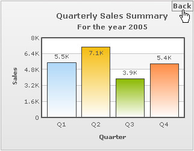

FusionCharts XT introduces a new and smart drill-down feature - LinkedCharts - that allows you to create unlimited level of drill-down charts using a single data source. All the links originate from a parent chart and its data, which comprehensively contains data or data URL for all descendant (child, grand-child) charts. Upon clicking the data plot items (columns, pie, etc.) of the parent chart, users can drill-down into descendant charts. The descendant charts (or children charts) can either replace the parent chart with an option to drill-up, or can be opened in new dialogs or frames.
Let's consider a simple scenario with a single level of drill-down. There is a parent chart that shows yearly sales, which when clicked will render child charts having quarterly sales for that year. LinkedCharts allows you to build these kinds of scenarios (and much more complex) without having to write any additional line of code.
A very basic implementation of LinkedChart feature (where we assume that the parent chart is a Column 2D chart with four columns -representing four years) works in the following way:
 |
 |
| Parent chart when the data for year 2005 is clicked | LinkedChart with data for 2005 replaces the parent chart |
Watch it live!
How to render?
To create LinkedCharts, you need to follow these steps:
- First, create the XML/JSON data for parent chart. This is called the parent data source and comprehensively contains Data String or data URL for all descendant charts.
- Next, append the data string or data URL for all the descendant charts (also called child chart) within the parent data source. If data string method is used, data for each descendant chart is embedded within the parent data source and linked using unique data identifiers.
- You are done. Yes, no additional code is required!
Let's see the code for a simple LinkedChart that renders a sales chart for four years with links:
<html>
<head><script type="text/javascript" src="FusionCharts/FusionCharts.js" ></script></head>
<body>
<div id="chartContainer">FusionCharts XT will load here</div>
<script type="text/javascript"><!--
var myChart = new FusionCharts( "FusionCharts/Column2D.swf", "myChartId", "320", "250", "0" );
myChart.setXMLUrl( "Linked-Data.xml" );
myChart.render( "chartContainer" );
// -->
</script>
</body>
</html>
In the above code (which we have saved as linked-charts.html) we render a Column2D chart with Linked-Data.xml as the data source for the chart. This is the parent chart from which descendant charts will be generated. Let's see how to define the data for all the LinkedCharts in the parent chart's data. The definition of data involves two parent things:
- Select the option whether to embed the chart data for the descendant charts into the parent chart's data source or to keep them as separate URLs sources.
- As per the option decided, define the link attribute of each data plot (column, line, area etc.) and specify the descendant chart's data-format and data-source.
To begin with, let's find out below, how the data is stored in a single data source:
<chart caption="Yearly sales" xAxisName="Year" yAxisName="Sales">
<set label="2004" value="37800" link="newchart-xml-2004-quarterly" />
<set label="2005" value="21900" link="newchart-xml-2005-quarterly" />
<set label="2006" value="32900" link="newchart-xml-2006-quarterly" />
<set label="2007" value="39800" link="newchart-xml-2007-quarterly" />
<linkeddata id="2004-quarterly">
<chart caption="Quarterly Sales Summary" subcaption="For the year 2004"
xAxisName="Quarter" yAxisName="Sales">
<set label="Q1" value="11700" />
<set label="Q2" value="8600" />
<set label="Q3" value="6900" />
<set label="Q4" value="10600" />
</chart>
</linkeddata>
<linkeddata id="2005-quarterly">
<chart caption="Quarterly Sales Summary" subcaption="For the year 2005"
xAxisName="Quarter" yAxisName="Sales">
<set label="Q1" value="5500" />
<set label="Q2" value="7100" />
<set label="Q3" value="3900" />
<set label="Q4" value="5400" />
</chart>
</linkeddata>
<linkeddata id="2006-quarterly">
<chart caption="Quarterly Sales Summary" subcaption="For the year 2006"
xAxisName="Quarter" yAxisName="Sales">
<set label="Q1" value="6700" />
<set label="Q2" value="9200" />
<set label="Q3" value="10800" />
<set label="Q4" value="6200" />
</chart>
</linkeddata>
<linkeddata id="2007-quarterly">
<chart caption="Quarterly Sales Summary" subcaption="For the year 2007"
xAxisName="Quarter" yAxisName="Sales">
<set label="Q1" value="8900" />
<set label="Q2" value="6600" />
<set label="Q3" value="11200" />
<set label="Q4" value="13100" />
</chart>
</linkeddata>
</chart>
{
"chart":{ "caption":"Yearly sales", "xaxisname":"Year", "yaxisname":"Sales" },
"data":[{ "label":"2004", "value":"37800", "link":"newchart-json-2004-quarterly" },
{ "label":"2005", "value":"21900", "link":"newchart-json-2005-quarterly" },
{ "label":"2006", "value":"32900", "link":"newchart-json-2006-quarterly" },
{ "label":"2007", "value":"39800", "link":"newchart-json-2007-quarterly" }],
"linkeddata":[{
"id":"2004-quarterly",
"linkedchart":{
"chart":{
"caption":"Quarterly Sales Summary",
"subcaption":"For the year 2004",
"xaxisname":"Quarter",
"yaxisname":"Sales"
},
"data":[{ "label":"Q1", "value":"11700" },
{ "label":"Q2", "value":"8600" },
{ "label":"Q3", "value":"6900" },
{ "label":"Q4", "value":"10600" }]
}
},
{
"id":"2005-quarterly",
"linkedchart":{
"chart":{
"caption":"Quarterly Sales Summary",
"subcaption":"For the year 2005",
"xaxisname":"Quarter",
"yaxisname":"Sales"
},
"data":[{ "label":"Q1", "value":"5500" },
{ "label":"Q2", "value":"7100" },
{ "label":"Q3", "value":"3900" },
{ "label":"Q4", "value":"5400" }]
}
},
{
"id":"2006-quarterly",
"linkedchart":{
"chart":{
"caption":"Quarterly Sales Summary",
"subcaption":"For the year 2006",
"xaxisname":"Quarter",
"yaxisname":"Sales"
},
"data":[{ "label":"Q1", "value":"6700" },
{ "label":"Q2", "value":"9200" },
{ "label":"Q3", "value":"10800" },
{ "label":"Q4", "value":"6200" }]
}
},
{
"id":"2007-quarterly",
"linkedchart":{
"chart":{
"caption":"Quarterly Sales Summary",
"subcaption":"For the year 2007",
"xaxisname":"Quarter",
"yaxisname":"Sales"
},
"data":[{ "label":"Q1", "value":"8900" },
{ "label":"Q2", "value":"6600" },
{ "label":"Q3", "value":"11200" },
{ "label":"Q4", "value":"13100" }]
}
}
]
}
The above chart XML contains Yearly sales data for four years. Each dataplot is set with a link whose value starts with a prefix - newchart. The prefix lets the parent chart know that it is going to open a LinkedChart when the dataplot is clicked. newchart takes additional parameters as listed below:
- newchart is followed by a hyphen (-) and then the data-format for the new chart is specified. In this example it is xml. It can also take xmlurl, json and jsonurl as its value
- The rest of the value, after a hyphen again (-), of the link attribute defines the data-source as per the data-format provided in that link
- When xml is set as the data format, the data becomes an id of a <linkeddata> node in the same xml that contains the data for the existing chart
- In other cases, a URL of XML is set as the data
The XML contains some nodes called <linkeddata>. For each <linkeddata> node of the parent data (xml in this sample) an id is defined. This id is passed as the data source id of the xml data for the LinkedChart (as we discussed in point 3 above).The <linkeddata>node contains complete chart data (here XML) for the LinkedChart. Hence, when a dataplot is clicked, the new chart that opens up takes data from this node.
In case of JSON data (shown above), annual sales data for four years has been defined. Each dataplot is set with a link whose value starts with a prefix - newchart. The prefix lets the parent chart know that it is going to open a LinkedChart when the dataplot is clicked. newchart takes additional parameters as listed below:
- newchart is followed by a hyphen (-) and then the data format for the new chart is specified. In this example it is json. It can also take xml, xmlurl and jsonurl as its value
- The rest of the value, after a hyphen again (-), of the link attribute defines the data as per the specified data format
- When json is set as the data format, the data becomes an id of a linkeddata element in the same json that contains the data for the existing chart
- In other cases, a URL of JSON data source is set specified
The JSON contains a special Array called linkeddata. Each element of linkeddata Array contains data for the child LinkedCharts. Each element is an Object with an id property. The string that forms the value of the id property, serves as a JSON data for the LinkedChart (as we discussed in point 3 above). Each linkeddata element contains full chart data (JSON data in this case) for the LinkedChart -in a separate property linkedchart. Hence, when a dataplot is clicked, the new chart that opens up takes data from this property.
To achieve the seamless implementation of the LinkedCharts, FusionCharts JavaScript does the following:
- It automatically creates and shows a detailed child chart when a data plot item link » (specially defined links using newchart prefix) in the parent chart is clicked
- It clones all chart configuration settings from the parent chart to create the child chart or the LinkedChart
- It also allows you to configure specific properties for the descendant charts » e.g., type of chart, width, height, where the charts will be shown etc. using configureLink() function
- It notifies your code by way of events whenever a link is invoked, link item is opened and link item is closed
- It allows you to drill-down to unlimited numbers of levels
LinkedCharts feature provides a number of customizable options for the LinkedCharts as per your requirements. It can let you open LinkedCharts in light box or floating boxes or in a separate HTML container. It allows you to configure the type of the drilled-down chart. It invokes JavaScript events that one can listen to and perform advanced actions. To know more on this feature and for more code samples, go through Drill Down Charts > LinkedCharts. If you require more details on the JavaScript API pertinent to LinkedCharts, please go through : FusionCharts XT and JavaScript> Using LinkedCharts.